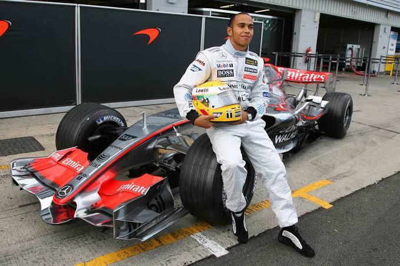

L'ère McLaren (2007 - 2012)
En 2007, Lewis Hamilton fait ses débuts en Formule 1 au sein de l'écurie McLaren-Mercedes aux côtés du double champion du monde en titre Fernando Alonso. Sa première saison entre directement dans l'histoire du sport automobile.
2007 : Des débuts sensationnels
Dès sa première course au Grand Prix d'Australie, Hamilton monte sur le podium avec une 3e place. Il enchaîne 9 podiums consécutifs pour ses neuf premières courses en F1 (un record absolu) et décroche sa toute première victoire au GP du Canada. Il frôle le titre mondial dès sa saison débutante, terminant 2e du championnat à un seul point de Kimi Räikkönen.

2008 : Premier titre de Champion du Monde
À l'issue d'une saison éprouvante et d'un dernier tour légendaire sous la pluie au Grand Prix du Brésil, Hamilton dépasse Timo Glock dans le tout dernier virage. Il décroche ainsi son premier titre de champion du monde à 23 ans, devenant à l'époque le plus jeune champion du monde de l'histoire de la F1.

2009 - 2012 : Victoires et régularité
Malgré des monoplaces parfois moins compétitives face à la domination de Red Bull, Hamilton démontre son talent pur en remportant au moins un Grand Prix lors de chaque saison passée chez McLaren (21 victoires au total avec l'écurie de Woking).
- 2007 : Vice-champion du monde (4 victoires)
- 2008 : Champion du monde de F1 (5 victoires)
- 2009-2012 : 12 victoires supplémentaires et de nombreuses pole positions